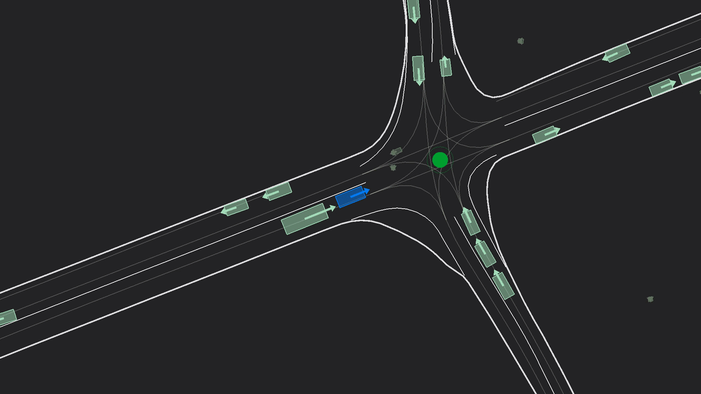
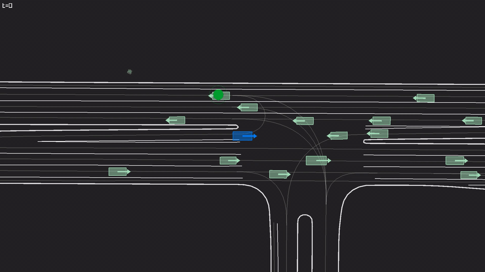
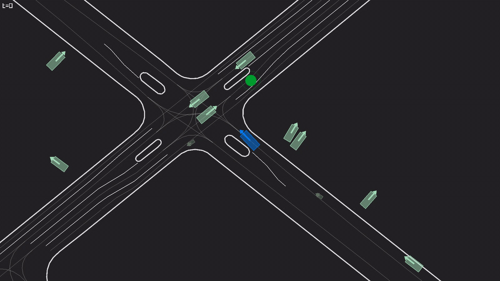

RL anchor
The anchor is fit once from demonstrations and used during PPO updates; it complements rather than replaces self-play experience.
CoRL version · May 2026
1NYU Tandon School of Engineering · 2NYU Courant · 3Princeton University · 4Centre for Robotics, Mines Paris · 5Valeo
We examine whether regularizing self-play RL toward a behavioral cloning anchor, trained from a small amount of human demonstrations, improves coordination with logged human driving trajectories.
Summary
Self-play can produce high-performing closed-loop driving policies, but task success in self-play does not imply compatibility with human drivers. We regularize PPO self-play toward a behavioral cloning anchor trained on a small subset of human demonstrations.
In held-out Waymo Open Motion scenarios, the resulting policies improve coordination with logged human trajectories while retaining robustness from large-scale simulated self-play.
The anchor is fit once from demonstrations and used during PPO updates; it complements rather than replaces self-play experience.
Held-out scenarios replay logged human agents while the learned policy controls the vehicle, exposing coordination failures that self-play metrics can miss.
The experiments vary map diversity, anchor dataset size, and regularization strength to separate robustness from compatibility.
Method

Fit a compact behavioral cloning policy to a selected subset of human driving demonstrations.
Train PPO in multi-agent simulation, exposing the policy to a broad distribution of interactive states.
Penalize divergence from the anchor, allowing task-directed RL while biasing behavior toward human driving conventions.
Evaluation

Results


Rollouts


Regularized · human-replay
The regularized policy completes the scenario while yielding an interaction that is more readily anticipated.
Regularized · rollout
Regularized self-play remains task-effective while staying close to the behavior induced by the anchor.

Unregularized · atypical
An unregularized policy can complete the scenario using maneuvers that are less consistent with logged human behavior.

Unregularized · transfer
Without the RL anchor, self-play may converge to behaviors that transfer poorly to human-replay evaluation.


Regularized · failure
Human-replay remains an imperfect proxy for deployment, and some interactions remain unresolved.
Demonstration replay
Expert SDC replays illustrate the demonstrations used to fit the behavioral cloning anchor.
Abstract
Self-play reinforcement learning can train autonomous driving policies from large-scale simulated experience, reducing dependence on extensive human demonstration datasets. However, policies trained only through self-play can adopt conventions that do not transfer reliably to human-replay evaluation.
We train driving policies with a minimal reward function, over 30 years of simulated self-play experience, and 30 minutes of human demonstrations. In human-replay evaluation, the resulting agents coordinate with logged human trajectories while using 125,000× less human data and 25× fewer GPU hours than imitation-learning baselines.
Citation
@unpublished{cornelisse2026humanlikeautonomy,
title = {Human-like autonomy emerges from self-play and a pinch of human data},
author = {Cornelisse, Daphne and Hunt, Julian and Zhang, Zixu and Doulazmi, Wa{\"e}l and Joseph, Kevin and {Fern{\'a}ndez Fisac}, Jaime and Vinitsky, Eugene},
year = {2026},
month = may,
note = {CoRL submission}
}